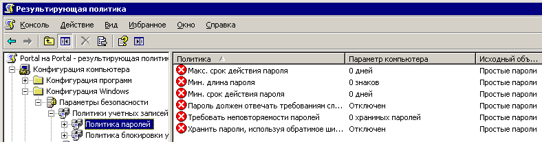

На днях боролся с групповыми политиками Active Directory.
У нас на работе действует стандарт по обеспечению безопасности, предписывающий использовать сложные длинные пароли и периодически менять их (конкретные требования в этом изложении роли не играют). В то же время, есть несколько служебных учётных записей, которые используются большим количеством людей. Например, для доступа к порталу Share Point из агентств, используются учётные записи agent и readonly. Эти учётные записи имеют простые пароли, совпадающие с именем пользователя.
Сейчас эти учётные записи заведены на том же компьютере, где установлен Share Point. Этот компьютер не введён в домен. Чтобы упростить жизнь людям, хочется использовать учётные записи из домена Active Directory. Люди, работающие под той же учётной записью, под которой они входят на портал, смогли бы больше не задумываться о пароле и автоматически попадать на портал под своей учётной записью. Пароль личной учётной записи постоянно менялся бы синхронно со сменой пароля "на вход в компьютер", чем достигалась бы повышенная безопасность.
Перед вводом сервера в домен и переводом портала на использование учётных записей из Active Directory нужно завести недостающих пользователей портала в домене. Как минимум, это учётные записи agent и readonly, обладающие простыми паролями. Соответственно, для того, чтобы их можно было завести с теми же паролями, необходимо смягчить политику безопасности паролей. Для этого я создал в Active Directory новое подразделение, для которого создал новую групповую политику "Простые пароли". Я применил её к подразделению, и попробовал завести пользователей. Но пользователей завести не удалось, т.к. их пароли не удовлетворяли требованиям безопасности.
Я посмотрел результирующую групповую политику и увидел следующее:
При просмотре любого из параметров в окошке свойств параметра выводится следующий текст:
Цитирую, чтобы мой пост легче находился поиском: "GPO, расположенные выше, имеют более высокий приоритет. Процессор обработки политики не пытался настроить параметр. Дополнительная информация приведена в %windir%\security\logs\winlogon.log на целевом компьютере."
Я долго искал в интернете ответ на вопрос почему это не работает. В конце концов вышел на обсуждение Применение групповых политик, где нашёл следующий ответ:
Дело в том, что политика паролей (как и все политики учетных записей) применяется к доменным учетным записям, которые находятся на контроллерах домена, а не на рабочих станциях. Поэтому всякие запреты наследования бесполезны, т.к. применяются не там.
К сожалению, невозможно предложить что-либо разумное, не создавая отдельный домен. Разве что внедрить для группы пользователей аутентификацию по смарт-картам - руководству обычно это нравится.
Вы можете назначить иную политику паролей на уровне OU, но она будет применяться только к локальным учетным записям пользователей, которые могут быть определены на компьютерах, входящих в данную OU. К доменным пользователям применяется единая политика паролей, определенная на уровне домена.
Так что ваша задача не имеет решения в рамках одного домена.
Поясню простыми словами. Ограничить требования к безопасности паролей можно только в политике компьютера. Политика компьютера применяется к учётным записям, хранящимся на самом компьютере, то есть к локальным учётным записям этого компьютера. Единственными компьютерами, на которых хранятся доменные учётные записи пользователей, являются контроллеры домена. Поэтому политика безопасности паролей по отношению к доменным учётным данным едина.
Причём отвечающие говорят об этом, как о достаточно известном fuck'те. Как я понимаю, обойти это можно только поменяв быстренько, пока никто не заметил, политику безопасности, завести нужных пользователей или поменять пароли, а затем так же быстро и незаметно вернуть прежнюю политику =D Вам смешно? Мне тоже. Хотя для кое-кого, это всё было бы смешно, если бы не было столь грустно. Например, для тех, кто не имеет возможности поменять политику домена - для администраторов подразделений.